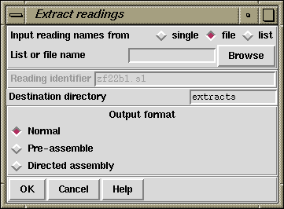

This function (which is available from the gap4 File menu) is used to produce copies of readings stored in the assembly database. The readings, and information about them, are written to disk in experiment file format (see section Experiment file format) and will include any edits made and tags created. They are written in their original orientation. No change is made to the copies in the assembly database: this process creates copies and should not be confused with "Disassemble readings". See section Disassemble Readings. The names of the readings to extract can be read from a list or a file of file names. Clicking on the browse button will invoke an appropriate browser dialogue. If just a single reading is to be assembled choose "single" and enter the filename instead of the file or list of filenames. The files are written into the "Destination directory" with their original file names.

If required, the files will include additional information suitable for processing by either "Enter pre-assembled data" or "Directed assembly" (see section Experiment file format explained). Both contain the ON and AV Experiment File records. Pre-assembled data also contains SE and PC records whilst Directed assembly contains AP records. It is recommended that Directed Assembly format is always used in preference to the Preassemble format.
To merge databases use the "Directed assembly" format to output the contigs required. Then, within the database you wish to merge the data use the Directed Assembly (see section Directed Assembly) command. By using Directed Assembly with new blank databases it is also possible to create database subsets or to split databases.